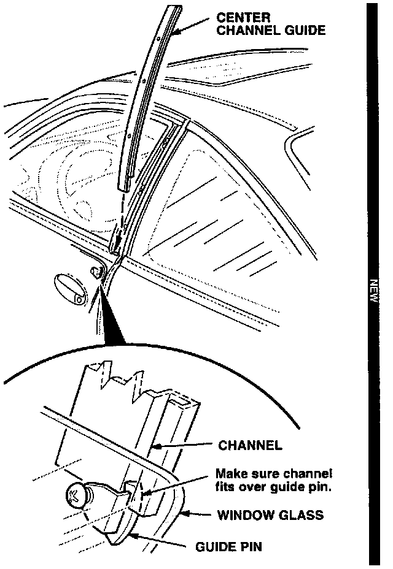
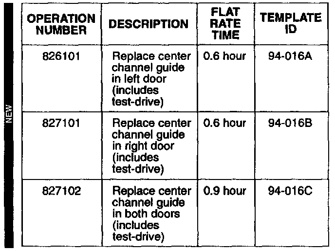

Window - Rattles When Partially Open
January 7, 1997BULLETIN NO.
94-016
YEAR
1994-96
MODEL
INTEGRA
VIN APPLICATION
See VEHICLES AFFECTED
Partially Open Window Rattles
(Supersedes 94-016, dated November 1, 1994)
SYMPTOM
The window rattles when it is partially open and the vehicle is driven on rough roads.
PROBABLE CAUSE [NEW]
Too much clearance between the window guide pin and the center channel guide.
VEHICLES AFFECTED [NEW]
3-door (GS-R):
1994-95 - All
1996 - Thru VIN JH4DC2....TS004272
3-door (RS, LS):
1994-95 - All
1996 - Thru VIN JH4DC4....TS017480
PARTS INFORMATION [NEW]
Center Channel Guide (left door):
P/N 72272-ST7-003
Center Channel Guide (right door):
P/N 72232-ST7-003
REQUIRED MATERIALS [NEW]
Scotch-Mount Double-Sided Tape:
3M P/N 06377
CORRECTIVE ACTION [NEW]
Replace the center channel guide on the affected door(s) with the parts listed under PARTS INFORMATION.
1. Lower the window glass fully.
2. Remove the center channel guide cover and the three channel guide screws. (Refer to Page 20-10 of the Service Manual.)
3. Pull the guide up to remove it.

4. Install a new center channel guide. During installation, make sure you fit the channel over its guide pin.
5. If necessary, repeat steps 1 through 4 on the other window.
6. With the affected window(s) partially open, test-drive the vehicle on a rough road to verify that the rattle is gone.
7. Lower the window(s), and reinstall the channel guide cover(s) using double-sided adhesive tape.
WARRANTY CLAIM INFORMATION

In warranty:
The normal warranty applies.
Failed P/N: 72272-ST7-003 - left door [NEW]
72232-ST7-003 - right door [NEW]
Defect code: 043 [NEW]
Contention code: B07 [NEW]
Out of warranty:
Any repair performed after warranty expiration may be eligible for goodwill consideration by the District Technical Manager or your Zone Office. You must request consideration, and get a decision, before starting work.